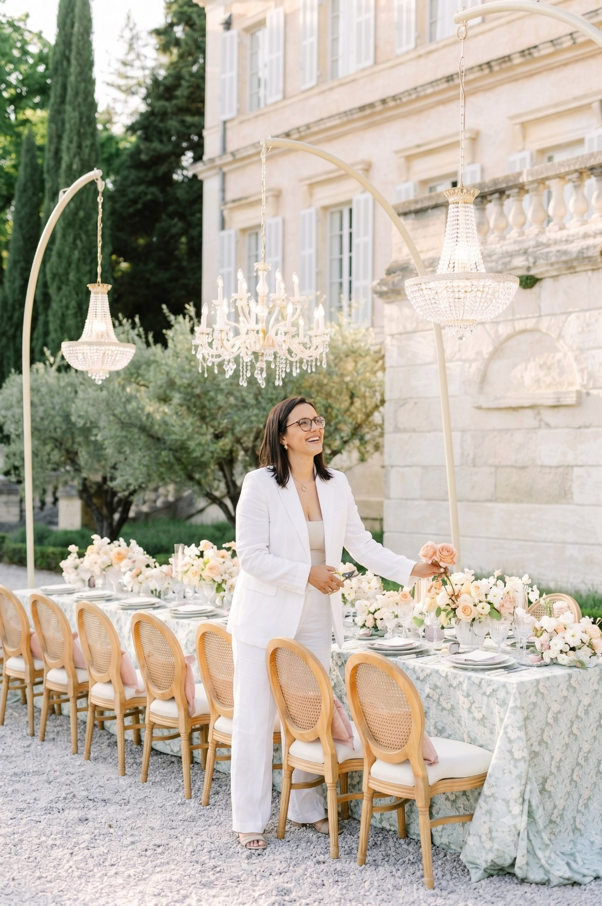
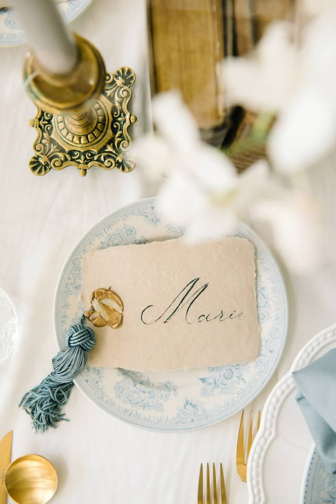

Exclusivo para mulheres apaixonadas por organização que querem criar o seu negócio de eventos
Descobre por onde começar a rentabilizar a tua paixão por eventos, sem largar tudo de uma vez, investir muito em material ou depender da sorte para ter clientes.
É no grupo de WhatsApp que envio o link de acesso e os lembretes para não perderes a aula.

Estás presa num trabalho que não te realiza?
Sentes que as tuas qualidades estão a ser desperdiçadas e que mereces mais?
Sentes que não tens tempo para ti e para a tua família, e que a vida passa a correr?
Gostavas de ter dinheiro para realizar os teus sonhos e viver sem preocupações financeiras?
Estás cansada de trabalhar para os sonhos dos outros, quando tens o teu próprio sonho à espera de ser realizado?
És apaixonada por eventos, mas não sabes por onde começar?
Viver de eventos não é…
…apenas sobre ter um negócio de sucesso. É sobre criar a vida que sempre desejas, com mais liberdade, tempo, dinheiro e realização pessoal.
É muito mais do que um negócio
Já pensaste em ter a flexibilidade de escolher como e onde gastas o teu tempo? Um negócio de eventos permite-te criar a tua própria agenda, tendo mais tempo para ti, para a tua família e para os momentos que realmente importam.
Trabalhar com as tuas qualidades e paixões todos os dias. Quando escolhes viver de eventos, estás a usar as tuas habilidades naturais e a transformar a tua paixão em algo lucrativo e cheio de significado.
Ter um negócio próprio na área dos eventos permite-te alcançar a independência financeira que sempre desejaste. És tu que defines os teus limites, e o céu é o limite para o quanto podes faturar.
Ao criares o teu negócio, vais conseguir organizar-te melhor e equilibrar a tua vida pessoal e profissional. Menos stress, mais tempo de qualidade para ti e para as pessoas que amas.
Serás valorizada pelo que fazes de melhor, sentindo o impacto positivo que deixas na vida das tuas clientes, enquanto constróis um negócio que te preenche e realiza.
Criar um negócio de eventos não é só sobre o presente. É também sobre garantir uma fonte de rendimentos que te permite viver com mais tranquilidade e segurança a longo prazo.

Começa por aqui
O que precisas para estruturar o teu negócio de eventos desde o início, para avançares com confiança sem grandes investimentos.
Como definir o preço certo pelos teus serviços, para o teu negócio ser lucrativo e sustentável.
Como te diferenciares da concorrência, para seres vista como a melhor escolha e atraíres mais clientes.
As estratégias que garantem clientes todos os meses, para viveres de eventos e alcançares a tua liberdade financeira.
Como manter o equilíbrio entre a vida profissional e pessoal, com tempo para ti, para a família e para o que mais gostas.
Como definir um serviço de valor, para cobrares o preço perfeito e seres reconhecida pelo teu trabalho.
+20.000 mulheres já assistiram
Sem dúvida uma bolha de ar fresco, esta aula. A aprendizagem de hoje foi aprender que conseguimos alcançar tudo nas nossas vidas.
@martacarolinacanelas
Foi uma aula brutal, obrigada Adriana. Perceber o início de como devemos começar tudo, os passos, a ordem e a sequência de como deve ser feito, para mim foi fantástico. Se as aulas são assim, que venha a CODE.
@_rilhas_
Sem dúvida a aula de hoje é um sinal que me indica a seguir em frente, sem medos e com vontade de encontrar a felicidade profissional há tanto esperada. Obrigada Adriana por esta oportunidade.
@trabalhos.e.ideias.artesanais
Boa noite Adriana, antes de mais quero dizer que adorei. Para mim foi perceber a importância de ter uma estrutura de negócio. Ansiosa pelas próximas aulas.
@vaniadantaslima
Aprendi imenso nesta aula. Ter a equipa certa do meu lado será meio caminho para o sucesso, e ter um bom método de trabalho é a melhor forma de me tornar na profissional de excelência que quero ser.
@cristiana.c.a
Nesta aula aprendi que não podemos nem devemos fazer tudo sozinhos: devemos ter sempre um método de trabalho definido, clareza e definição do que fazer num evento. Com as dicas da Adriana sei que vou conseguir.
@lilia.rocha.904
Confiar em mim e não ter receio de avançar! Assumir responsabilidades pela minha felicidade. Vai dar tudo certo quando fazemos o que mais gostamos.
@danielalc23
Adriana, adorei a aula de hoje. O que tirei de mais importante para mim é ultrapassar o medo e a insegurança que tenho.
@chivareis
Hoje aprendi a importância de ser uma profissional de excelência e não uma profissional perfeccionista. Obrigada pela aula!
@serra.emflor
Quem é a Adriana?
Empreendedora há mais de 10 anos e fundadora de 3 negócios de sucesso
Divide o seu tempo a celebrar a vida com a família e amigos, a viver de eventos e a ajudar quem quer viver de eventos
Ama o que faz e está sempre pronta para trabalhar, não trocaria a sua vida por nenhuma outra!
Tem centenas de eventos realizados
Formadora Certificada DGERT e Instrutora Online Certificada
Fundadora da Cheira'Festa
Mais de 350 alunas certificadas como Profissionais de Organização e Decoração de Eventos
Todas as mulheres que hoje vivem de eventos sentiram exatamente o mesmo antes de começar. O primeiro passo é o mais difícil, e é precisamente esse que damos juntas nesta aula.
Medo de falhar e que te apontem o dedo porque não conseguiste.
Medo de não conseguir e colocar em causa a tua estabilidade financeira.
Medo de não ter clientes suficientes e não conseguir viver de eventos.
Medo de não conseguir equilibrar o teu tempo entre a família e o negócio.
Medo de investir dinheiro em algo sem saber se vai resultar.
Medo da concorrência e dúvidas se realmente há espaço para ti.
Medo de não conseguir diferenciar-te e fazer algo único e valioso.
De não saber por onde começar e sentires-te perdida com tanta informação.
pessoas já participaram e agora chegou a tua vez.
É no grupo de WhatsApp que envio o link de acesso e os lembretes para não perderes a aula.